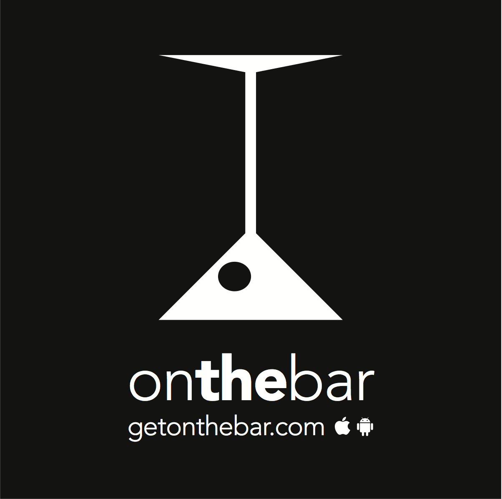

Projects
Past
Sparsity Applications for Hydraulic Fracture Monitoring

Low-Rank Hyper-Spectral Imaging

For Fun
Bartender recommendations & Topic Modeling
I'm currently working with the good folks at On The Bar to implement and develop a bartender recommendation engine for their mobile app. The engine uses Latent Dirichlet Allocation (LDA) and collapsed Gibbs Sampling to infer a low dimensional space of user's bartender preferences. We then use this inferred topic model to predict which bartenders users will like based on their current activity.
Coffee and Kalman Filtering
It is common practice to use a weighing scale during the preparation of coffee as hot water is mixed with the ground coffee. The scale is used to measure the total amount of water added to the coffee grounds. In order to better facilitate consistent brewing it is desirable to measure not just volume but also flow-rate during the preparation. In collaboration with Luminaire Coffee, I designed and tested a Kalman filter for estimating flow rates of coffee using a simple scale. This project was used as a demo for Specialty Coffee Association of America (SCAA) 2012 but may become a product in the future. Provisional Patent granted March 2012. More information.